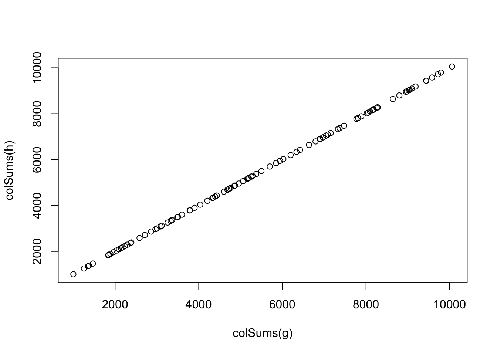
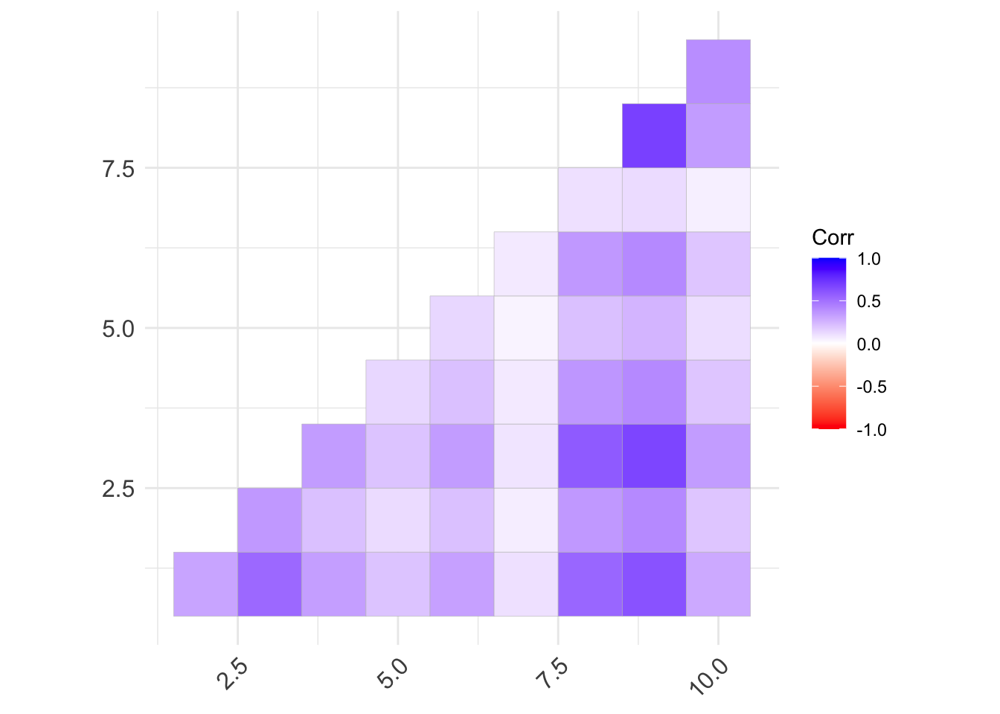
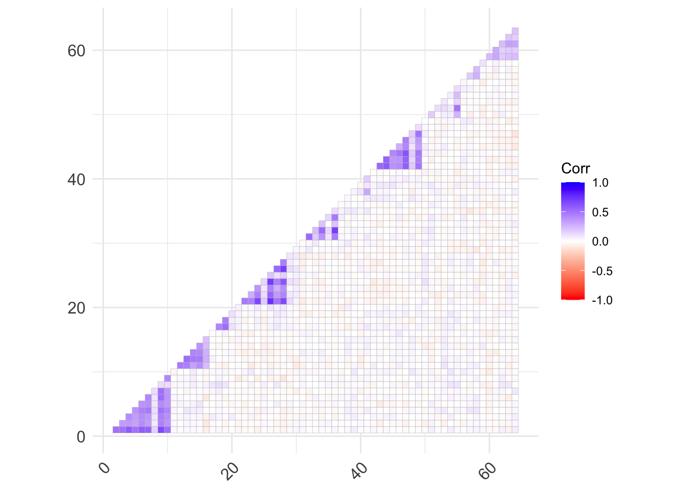
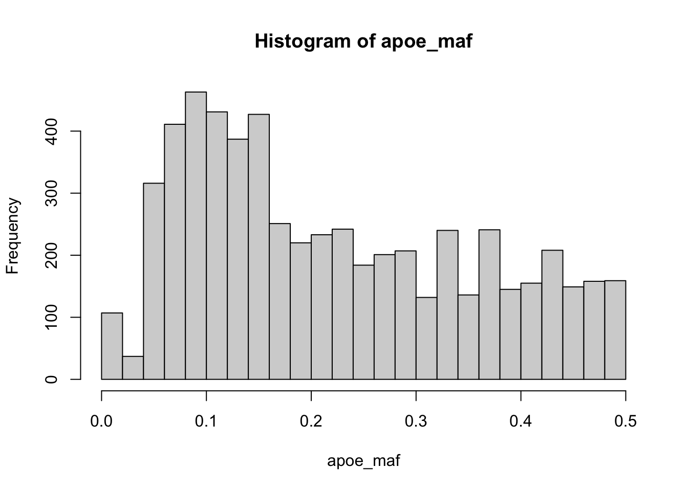
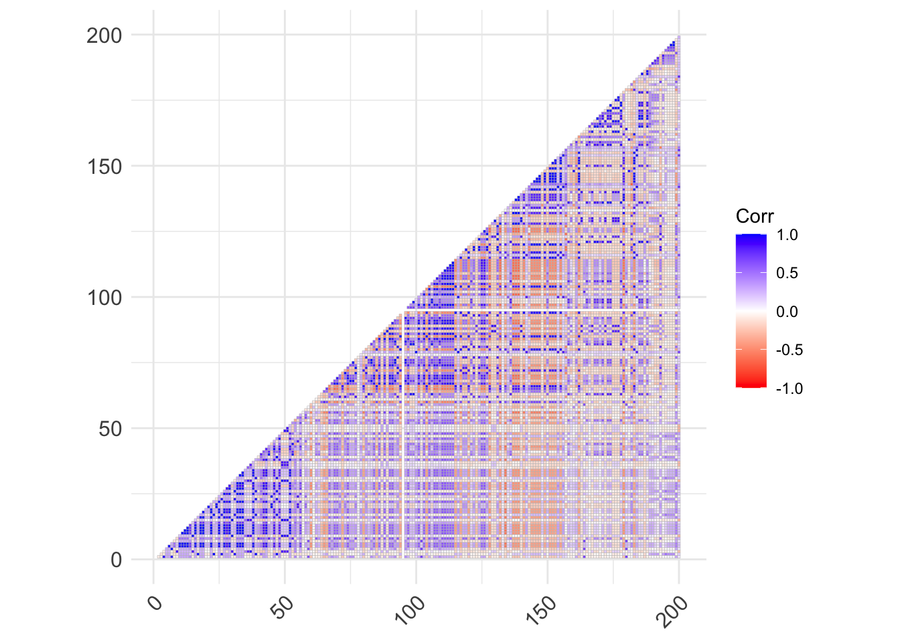
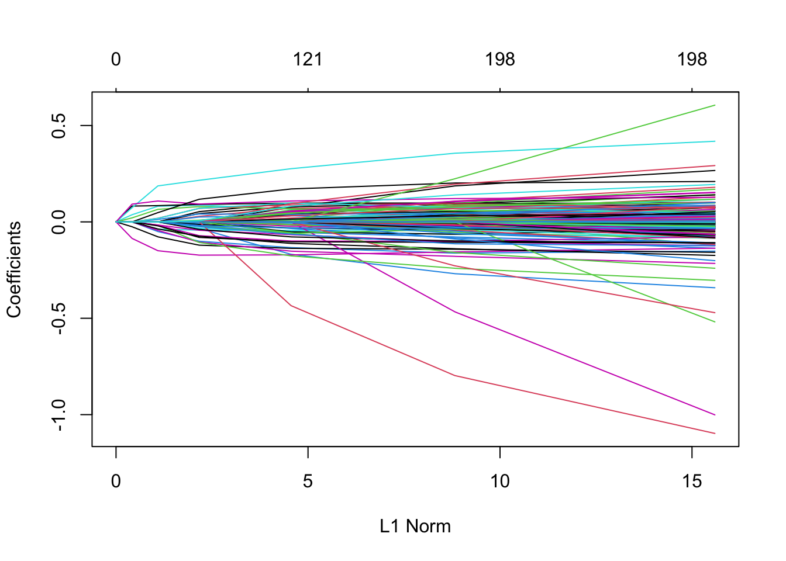

library(dplyr)
library(stringr)
library(readr)
library(glmnet)
library(ggcorrplot)
library(glmnet)
library(pROC)
set.seed(123)Simulating Linkage Disequilibrium
Simulating unassociated SNPs
- We covered additive risk variants under a liability-threshold model
- We also added multiplicative interactions between two loci
- But in fact we can have any relationships between two SNPs (theoretically)
Start by setting up functions for unassociated SNPs as before:
n <- 10000 # observations
p <- 100 # SNPsThen generate unassociated genotypes
add_noise <- function(n = 1000, p = 100, maf_range = c(0.05, 0.5)) {
maf <- runif(p, maf_range[1], maf_range[2])
genotypes <- sapply(maf, function(freq) rbinom(n, 2, freq))
return(genotypes)
}And run a quick check that everything’s okay:
g <- add_noise(n, p)
g[1:10, 1:10] [,1] [,2] [,3] [,4] [,5] [,6] [,7] [,8] [,9] [,10]
[1,] 0 0 1 1 1 0 0 1 0 0
[2,] 0 0 0 1 1 1 1 1 1 1
[3,] 0 1 0 1 0 1 2 2 0 1
[4,] 1 0 0 0 0 0 0 2 0 0
[5,] 0 1 1 0 0 0 0 0 0 0
[6,] 1 1 0 0 0 0 0 0 1 0
[7,] 1 1 1 2 0 0 0 2 2 1
[8,] 0 1 1 1 1 0 1 0 1 0
[9,] 0 1 1 0 1 0 1 1 0 1
[10,] 0 2 0 2 1 0 0 1 2 0Simulating simple LD
We’ll measure this here using pearsons correlation (though there are other prominent metrics like D`) making SNPs in varying LD is actually really easy:
- If we duplicated a SNP, then correlation (LD) would be perfect
- To decrease this correlation, we randomly shuffle a proportion of the rows in one of the SNPs
- The greater proportion of rows that we shuffle, the more decorrelated they are
- Shuffling all would be linkage equilibrium and the SNPs would not be correlated anymore
- Randomly shuffling (rather than flipping them from e.g. 2 to 1 or 0) means we maintain MAF and HWE too
For a given SNP, we can make a couple of functions to derive simple LD, LD blocks and more.
Replacing causal SNPs with SNPs in LD
This function returns a SNP in LD with the SNP we pass in
add_simple_ld <- function(causal_snp, r2) {
indices_to_shuffle <- sample(1:length(causal_snp),
size = (1 - r2) * length(causal_snp),
replace = FALSE
)
ld_snp <- causal_snp
if (length(indices_to_shuffle) > 1) {
shuffledpeople <- sample(causal_snp[indices_to_shuffle])
ld_snp[indices_to_shuffle] <- shuffledpeople
}
return(ld_snp)
}Here, this function takes genotypes, a proportion of indices to sample and r2 values and replaces all the SNPs at those indices with the associated r2 values
replace_with_ld <- function(g, m, ld_range = c(0.1, 0.9)) {
# g is our genotypes
# m is the proportion of causal SNPs we want to keep
# ld_range is the min/max values for a uniform distribution
# for us to sample from for
# the LD for the new SNPs we will create
# Note we replace the causal SNPs with the LD ones
# (rather than adding them in)
# This has the added benefit of stopping dimension size
# from blowing-up
snp_indices_to_replace <- sample(1:dim(g)[2],
as.integer((1 - m) * dim(g)[2]),
replace = FALSE
)
ld_for_replacements <- runif(
length(snp_indices_to_replace),
ld_range[1], ld_range[2]
)
for (i in 1:length(snp_indices_to_replace)) {
j <- snp_indices_to_replace[i]
g[, j] <- add_simple_ld(g[, j], ld_for_replacements[i])
}
return(g)
}Running a quick check
- We create new genotypes h where there’s only 10% of the causal SNPs tagged
- Here they’re all noise, so nothing’s really causal though
h <- replace_with_ld(g, m = 0.1)# derive a genotypic score (PRS) for each
# here this is just the unweighted sum of the alleles
# there are no risk alleles here as they're all unassociated, but it allows us
# to reduce the dimensions to compare two datasets easily
plot(colSums(g), colSums(h))

# but individual genotypes should be less correlated (90% of the time)
cor(g[, 1], h[, 1])[1] 0.6860844cor(g[, 2], h[, 2])[1] 0.5647958cor(g[, 3], h[, 3])[1] 0.8096285cor(g[, 4], h[, 4])[1] 0.5248311cor(g[, 5], h[, 5])[1] 0.5447041Simulating more complex LD blocks
Again, suprisingly simple to do:
- Note: read about them and checkout haploview if you don’t know what LD blocks are
- To make a block, we just replace the causal SNP with several SNPs in varying LD
- Simplest way to do this is to draw from the uniform distribution for r2
- The more complex is to use something like a half-normal distibution that decreases as you move away from the causal SNP
- You’d think that it makes sense to slowly decrease LD as you move physically away from the causal SNP
- In practice, this isn’t really the case, and drawing from a uniform distribution does just fine
add_simple_ld_block <- function(snp, block_size = 10) {
ld_values <- runif(block_size, 0.1, 0.9)
ld_block <- matrix(0, nrow = length(snp), ncol = block_size)
for (i in 1:block_size) {
ld_block[, i] <- add_simple_ld(snp, ld_values[i])
}
return(ld_block)
}We can test replacing a single causal SNP with a whole block of SNPs in LD and plot the correlation:
ld_block <- add_simple_ld_block(g[, 1])
ggcorrplot(cor(ld_block), type = "lower", colors = c("red", "white", "blue"))

Success!
We can then iterate through the causal SNPs in and replace each with a block. However, it’s going to up the dimensions substantially, so we’ll do two things:
- Re-simulate a smaller dataset with just 10 SNPs
- Randomly draw the block size from a distribution so we have different block sizes
g <- add_noise(p = 10, 1000) # create initial dataset of 10 SNPs
block_sizes <- sample(3:10, 10, replace = TRUE) # sample 10 blocks, each of which is 3-10 SNPs
for (i in 1:ncol(g)) {
block <- add_simple_ld_block(g[, i], block_size = block_sizes[i])
if (i == 1) {
ld_blocks <- block
} else {
ld_blocks <- cbind(ld_blocks, block)
}
}ggcorrplot(cor(ld_blocks), type = "lower", colors = c("red", "white", "blue"))

We can now see some of the classic LD block structure from real populations! It’s worth noting a few points here though:
- The situation where you have two variants that are in high LD, but only one of them is in high LD with a third variant, or where a variant is in higher LD with a variant further away than the variant right next to it is very common.
- Actual block structure varies by population (e.g. Europeans tend to have a clearer block structure because of population bottlenecks/inbreeding etc.)
Simulating even more realistic LD blocks
What if we want to get even closer to realistic LD?
Background
- So far we’ve been simulating LD with the causal SNP, but it’s too complicated to try to manually set the pairwise LD to be the same as a real dataset using the method we’ve implemented
- This would require us iteratively shuffle predictors and keep rechecking pairwise correlations between all the SNPs in a block (and would ignore the fact that blocks aren’t that clean - there can be LD with SNPs further away too!)
- More complicated pure-simulation methods approach the problem by taking a population and a given evolutionary model and following them forwards or backwards in time
- For example, they may start with a population with very little LD (most variants are independent) and force it through population bottlenecks to create LD blocks
- Alternatively, they may start with very strong LD blocks (most variants dependent) and making the population undergo mating/recombination to break up the LD blocks till LD structure reaches the desired level
- These methods are typically more complicated to implement than what we’ve done here - they may represent both chromosomes to allow for crossing-over during meiosis, for example
- A classic example is GenomeSIMLA, but there are a huge number of options these day
- Realistically though, these methods can all be computationally intensive, and aren’t used that often
- Usually, when we’re not too bothered about closely mimicking a real population, it’s easier to simulate yourself, as we do here, so you can precisely control the aspects you want that may not be available in a given package
- When we want more realistic LD structure, it’s far easier (and probably more realistic) to just take it from real data
Working with 1000 genomes (1kg) data
We do this by sampling from real data (1kg), so LD structures are realistic and then we just need to create a phenotype.
We can extract specific regions from 1kg remotely using a system call to bcftools, as below. If bcftools is a struggle to install, and you have the space, you can download biallelic SNV 1kg data from here instead. We’ll be using a small subset of the full 1kg data - the APOE region from chromosome 19 only. Note that the genome build we’ll use (now and always) will be GRCh38. If you use the bcftools option, make sure you follow all the instructions on the download page and add the installation directory to your path. Using the method below will only download a filtered version of the APOE region locally as a vcf, which should be around 60Mb on disk, so not too big.
# assuming you're working in the genetic_simulations directory
# please username/directory structure and change slashes in paths if working in Windows
setwd("/Users/seafloor/genetic_simulations")
dir.create("data")Warning in dir.create("data"): 'data' already exists# set path for your bcftools binary
Sys.setenv(PATH = paste(Sys.getenv("PATH"), "/Users/seafloor/Applications", sep = ":"))
system('bcftools view "https://ftp.1000genomes.ebi.ac.uk/vol1/ftp/data_collections/1000_genomes_project/release/20181203_biallelic_SNV/ALL.chr19.shapeit2_integrated_v1a.GRCh38.20181129.phased.vcf.gz" --regions "chr19:44400000-46500000" --min-af 0.05 --output-type v --output data/apoe_region_1kg_grch38.vcf')# read our new vcf file, which is variants * individuals
vcf <- read_tsv("data/apoe_region_1kg_grch38.vcf", comment = "##") %>%
mutate(ID = str_c(`#CHROM`, "_", POS, "_", REF, "_", ALT)) %>%
select(-`#CHROM`, -POS, -REF, -ALT, -QUAL, -FILTER, -INFO, -FORMAT)Rows: 5840 Columns: 2557
── Column specification ────────────────────────────────────────────────────────
Delimiter: "\t"
chr (2556): #CHROM, ID, REF, ALT, QUAL, FILTER, INFO, FORMAT, HG00096, HG000...
dbl (1): POS
ℹ Use `spec()` to retrieve the full column specification for this data.
ℹ Specify the column types or set `show_col_types = FALSE` to quiet this message.variants <- vcf[["ID"]]
samples <- colnames(vcf)[2:length(colnames(vcf))]
# reformat to individuals * variants
# and count number of ALT alleles
df <- as_tibble(t(vcf[, 2:ncol(vcf)])) %>%
rename_all(~variants) %>%
sapply(str_count, "1") %>%
as_tibble()Warning: The `x` argument of `as_tibble.matrix()` must have unique column names if
`.name_repair` is omitted as of tibble 2.0.0.
ℹ Using compatibility `.name_repair`.We now have a chunk of 1kg in the right format (counts of the ALT allele). We can run a quick check for MAF to make sure everything has gone well with reading, transforming and counting.
get_maf <- function(v) {
afreq <- sum(v) / (2 * nrow(df))
if (afreq > 0.5) {
return(1 - afreq)
} else {
return(afreq)
}
}
apoe_maf <- sapply(df, get_maf)
# check minimum
print(paste("Minimum MAF: ", min(apoe_maf)))[1] "Minimum MAF: 0"# check MAF vs expected for APOE SNPs used to calculated e2/e4 status
# rs7412 us reasonable, rs429358 is low but possibly due to mixed populations
# as total MAF across populations is closer to ~7% in ALFA, while rs7412 is ~8% across pops
print(paste("rs7412 MAF (0.078 in TOPMED): ", round(get_maf(df[["chr19_44908822_C_T"]]), 2)))[1] "rs7412 MAF (0.078 in TOPMED): 0.08"print(paste("rs429358 MAF (0.155 in TOPMED): ", round(get_maf(df[["chr19_44908684_T_C"]]), 2)))[1] "rs429358 MAF (0.155 in TOPMED): 0.05"hist(apoe_maf, breaks = 20)

We have a really big sample of variants now (too big to really show LD for all easily, so we can plot a subset to check the local LD). We had roughly 100 SNPs in our simulations of our own LD, but that was for seemingly small blocks of LD. We’ll just take the first 200 from the APOE region here.
ggcorrplot(cor(setNames(df[, 1:200], c()),
use = "pairwise.complete.obs",
method = "pearson"),
type = "lower",
colors = c("red", "white", "blue"))

As we can see, there aare definitely blocks, but the correlation structure is significantly more complicated!
Simulations on 1kg data
Now we have our data and have checked the LD, we can create a phenotype. For now we’ll use an additive model for simplicity, but in future we can use our other methods to create interactions.
For this we’ll run simulations under an additive liability-threshold model, fixing heritability and prevalence beforehand, as before. Unlike last time, we’ll set the noise in the model based on the simulated heritability we set. We’ll also randomly select 1% as causal variants from the dataset, so only a subset affect disease status, but there are many variants in LD with them.
simulate_y <- function(X, p_causal = 0.01, h2_l = 0.2, k = 0.2) {
m <- as.integer(ncol(X) * p_causal) # number of causal variants
betas_causal <- rnorm(m) # get betas for causal variants
betas_null <- rep(0, ncol(X) - m) # null effects for remaining variants
betas <- sample(c(betas_causal, betas_null), ncol(X), replace = FALSE) # shuffle the betas so causal SNPs are randomly distributed
# derive the genotypic risk from the causal SNPs
causal_bool <- !dplyr::near(betas, 0) # get index of causal SNPs
g <- as.matrix(X[, causal_bool]) %*% betas[causal_bool] # genotypic value
var_g <- var(g)
# derive the noise (environmental risk, e) to be big enough that we achieve
# the desired deritability in the final phenotype
var_e <- (var_g / h2_l) - var_g # variance in e (noise) based on variance in g (genotypic risk) and heritability on the liability scale
e <- rnorm(nrow(X), 0, sqrt(var_e)) # simulate error for phenotype for all individuals
# combine genotypic risk and noise as we have previously
l <- g + e
l_z <- (l - mean(l)) / sd(l)
threshold <- qnorm(1 - k)
p <- as.integer(l_z > threshold)
# we're going to cheat and return two things as a list, but generally
# a function should return one value
return(list(p, causal_bool))
}We should now have a simulated phenotype for our dataset! They quick way to check is to fit a model.
Fitting sparse models on our simulations
We’ll make use of our list of causal SNPs to check if they roughly match up with the most important SNPs in the model.
# get train-test split
train_idx <- sample(1:nrow(df), as.integer(nrow(df) * 0.8))
test_idx <- setdiff(1:nrow(df), train_idx)
# setup simulation and store index for causal SNPs
results <- simulate_y(df)
X <- as.matrix(df)
y <- results[[1]]
causal_snps <- results[[2]]
# fit a lasso model
grid_params <- 10^seq(10, -2, length = 100)
X_train <- X[train_idx, ]
y_train <- y[train_idx]
mod_lasso <- glmnet(X_train, y_train,
family = "binomial", alpha = 1,
lambda = grid_params)We can see the plot below which shows us the coefficients for the different L1 norms, and that some of the coefficients do indeed drop to zero, so we can fit a nice sparse model to the data.
plot(mod_lasso)Warning in regularize.values(x, y, ties, missing(ties), na.rm = na.rm):
collapsing to unique 'x' values

But first we need to find the best lambda value to use for our model. We can do this using cross-validation. In reality, for such a small dataset, we would probably want to run nested cross-validation, but for now we’ll just use the whole dataset and run a train-test split as above. The practical consequence of this is that any estimate we have of predictive performance will be slightly off (likely overly-optimistic).
# use cross-validation to find the best lambda
cv_out <- cv.glmnet(X_train, y_train, alpha = 1,
parallel = TRUE, nfolds = 5,
family = "binomial")
best_lambda <- cv_out$lambda.min
# predict from our fit model with the best lambda
X_test <- X[test_idx, ]
y_test <- y[test_idx]
test_lasso <- predict(mod_lasso, s = best_lambda,
type="response",
newx = X_test)lasso_coef <- predict(mod_lasso, type = "coefficients",
s = best_lambda)
# get the top predictors
top_predictors <- lasso_coef@Dimnames[[1]][lasso_coef@i]
# get the list of simulated causal SNPs
top_predictors_expected <- colnames(df)[causal_snps]
# check the counts of top predictors
print(paste("N top predictors: ", length(top_predictors),
", N expected: ", length(top_predictors_expected),
sep = ""))[1] "N top predictors: 68, N expected: 58"# check the overlap
print(paste("Overlap: ", length(intersect(top_predictors, top_predictors_expected)),
" out of ", length(top_predictors_expected),
sep = ""))[1] "Overlap: 7 out of 58"As we can see, we didn’t do very well in find the most important SNPs in this dataset. LD raises a substantial problem for machine learning models. Well, any model, including GWAS, but multivariable models have been relatively neglected compared to univariable approaches in association studies, so we have fewer tools for figuring out the causal variants. We also chose a region with really strong LD structure and didn’t perform any pruning or clumping (filtering the variants by LD), so it’s somewhat unsurprising that we didn’t do well.
Finally we can check our AUC quickly to see how well we’ve done in terms of prediction.
pROC::roc(y_test, test_lasso)
Call:
roc.default(response = y_test, predictor = test_lasso)
Data: test_lasso in 406 controls (y_test 0) < 104 cases (y_test 1).
Area under the curve: 0.6723Despite not finding the causal SNPs, we’ve done quite well in terms of predictions. Again, not a suprising result. There’s strong LD structure, so we can predict well from variants in LD with the causal SNPs. This seems okay on the surface, but as the LD between the causal SNP and the SNP in our model vary across global populations, we would likely see a substantial drop in predictive performance in a different population. This is a fundamental problem with genetic prediction models.
Summary
We’ve covered a lot of ground here, but the main points are: - We can simulate very simple LD and even block structures a few lines of code - We can use real data and simulate phenotypes from it - We can then fit ML models to this data, but - LD presents a significant issue for identifying the causal variant in a dataset
There are a few logical follow-on questions. First is whether different ML models can perform better in such a scenario. Second is, given PRS often out-perform ML methods on complex trait prediction, is this largely due to how they handle LD?